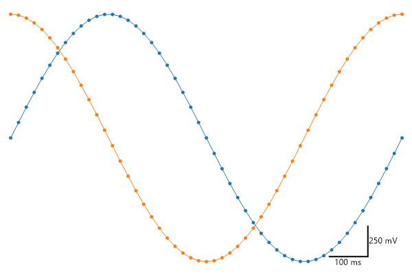
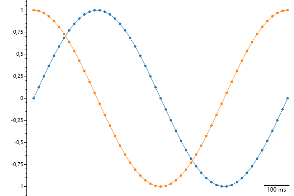
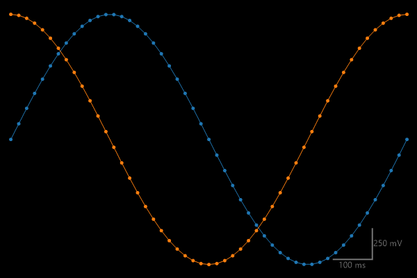

This page contains recipes for the Scale Bar category.
Visit the Cookbook Home Page to view all cookbook recipes.
Visit the Cookbook Home Page to view all cookbook recipes.
Scale Bar
An L-shaped scalebar can be added in the corner of any plot. Set the vertical or horizontal sizer to zero and the scale bar will only span one dimension.
var plt = new ScottPlot.Plot(600, 400);
// plot sample data
plt.AddSignal(DataGen.Sin(51));
plt.AddSignal(DataGen.Cos(51));
// remove traditional scale indicators
plt.Grid(enable: false);
plt.Frameless();
// add an L-shaped scalebar
plt.AddScaleBar(5, .25, "100 ms", "250 mV");
plt.SaveFig("scalebar_quickstart.png");

Horizontal Scale Bar
Set the vertical or horizontal sizer to zero and the scale bar will only span one dimension.
var plt = new ScottPlot.Plot(600, 400);
// plot sample data
plt.AddSignal(DataGen.Sin(51));
plt.AddSignal(DataGen.Cos(51));
// show only the left axis
plt.XAxis.Hide();
plt.XAxis2.Hide();
plt.YAxis2.Hide();
plt.Grid(enable: false);
// add a horizontal scale bar (no Y height)
plt.AddScaleBar(5, 0, "100 ms", null);
plt.SaveFig("scalebar_horizontal.png");

Styled Scale Bar
An L-shaped scalebar can be added in the corner of any plot. Set the vertical or horizontal sizer to zero and the scale bar will only span one dimension.
var plt = new ScottPlot.Plot(600, 400);
// plot sample data
plt.AddSignal(DataGen.Sin(51));
plt.AddSignal(DataGen.Cos(51));
// remove traditional scale indicators
plt.Grid(enable: false);
plt.Frameless();
// add an L-shaped scalebar
plt.AddScaleBar(5, .25, "100 ms", "250 mV");
// add style
plt.Style(Style.Black);
plt.SaveFig("scalebar_styled.png");
